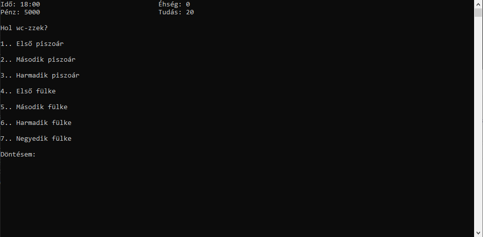

Helyszínek
Saját szoba
Ez az otthonod, legalábbis a második. Itt sok mindent lehet csinálni. Tanulni is tudsz, de ha meguntad, akkor telefonozhatsz, játszhatsz, ehetsz, vagy beszélgethetsz mással.
Ez az otthonod, legalábbis a második. Itt sok mindent lehet csinálni. Tanulni is tudsz, de ha meguntad, akkor telefonozhatsz, játszhatsz, ehetsz, vagy beszélgethetsz mással.


WC
Eltudsz menni az illemhelyre, ha el kell végezned az elvégzendőt. Több, "csodálatos" piszoárból és fülkéből választhatsz.
Eltudsz menni az illemhelyre, ha el kell végezned az elvégzendőt. Több, "csodálatos" piszoárból és fülkéből választhatsz.
Fürdőszoba
Minden nap letudsz fürödni a kollégiumban, ha problémába akadsz, akkor az teljesen átlagos.
Minden nap letudsz fürödni a kollégiumban, ha problémába akadsz, akkor az teljesen átlagos.

Tanulószobák
Itt tudsz több helyen is tanulni. Ha akarsz, tanulhatsz tanszobában, kistanulóban, vagy a saját szobádban.
Itt tudsz több helyen is tanulni. Ha akarsz, tanulhatsz tanszobában, kistanulóban, vagy a saját szobádban.